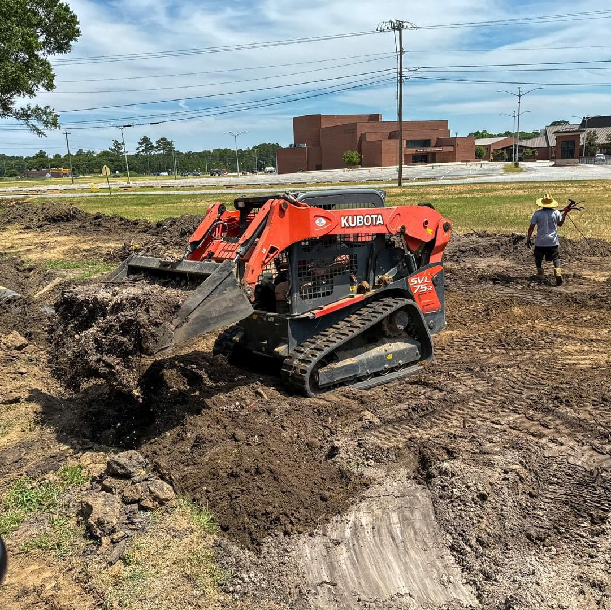

Standing water
Standing water after rain can point to a low area, restricted outlet, or an incomplete route across the property.

drainage solutions —
ECS evaluates grade, runoff, soil conditions, crossings, and available outlets, then builds a drainage system suited to the site.

common drainage problems —
Effective drainage begins by looking beyond the wet spot. Grade, runoff, crossings, soil disturbance, and the final discharge point all affect the path.
Standing water after rain can point to a low area, restricted outlet, or an incomplete route across the property.
Water collecting beside a home, building, driveway, or outdoor space deserves a site-wide look before it causes more disruption.
Erosion, ruts, and persistently soft areas show where moving water and soil are working against the site.
site assessment —
Water problems are connected to the rest of the property. ECS considers the collection area, the path between components, and where the water can discharge before settling on an approach.
Note roof runoff, neighboring grade, paved areas, and other sources feeding the wet area.
Check low points, drive crossings, structures, and existing drainage components.
Confirm where collected water can go so the system resolves the problem responsibly.
drainage capabilities —
Every recommendation is property-specific. These are the drainage and supporting site services ECS can bring together.
Identify where water enters and gathers, then shape a practical collection point for the conditions on the property.
Create a dependable route that moves water away from the problem area instead of shifting it a few feet away.
Coordinate the drainage system with the rest of the site and keep serviceable components working as intended.
our process —
Start with the symptom, then trace the grade, inflow, low points, crossings, and possible outlets around it.
Match the route and drainage components to the property instead of forcing a one-size-fits-all trench into the site.
Install the connected path, restore the work area, and give runoff somewhere practical to go.

local experience —
Drainage + site work
Around Moultrie and South Georgia, a drainage plan has to work with the actual grade, drive crossings, neighboring runoff, existing structures, and available discharge point.
Environmental Construction Services is family-owned and operated in Moultrie. Because ECS also handles grading, culverts, excavation, and site preparation, the drainage route can be considered alongside the work needed to build it.
original drainage field note —
Standing water, washouts, and soggy ground all start as a drainage problem. This is the category of work that moves water where it belongs.
Every property drains, grades, and wears differently. Call or write and tell us what the ground is doing — we’ll take it from there.
questions about drainage —
These answers provide a starting point. The site itself determines the final recommendation.
Start with a property assessment. Where the water appears is not always where the problem begins, so ECS looks at the surrounding grade, runoff path, and available outlet before recommending a solution.
ECS works with drain fields, drain tile, French drains, septic systems, lift stations, drainage maintenance, grading, and culvert installation. The right combination depends on the site.
Yes. Environmental Construction Services provides drainage work for both residential and commercial properties in Moultrie and surrounding South Georgia communities.
Sometimes grading is part of the answer, but not every site can be corrected by reshaping the surface alone. Collection, underground conveyance, a culvert, or another outlet may also be needed.
Yes. Drainage maintenance is one of the services ECS offers. Call with what you are seeing and any details you have about the existing system.
talk with ECS —
Tell ECS where water collects, when it appears, and what it affects. The team will follow up to discuss the property and the appropriate next step.